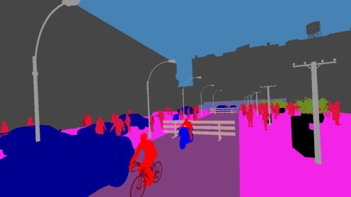

Alloan.ai Founding AI Consultant
AI analytics for lending, founded by Princeton PhDs. I build the AI side of it: guided agents and workflows over ABF, their in-house language for loan analytics, plus training models through agents.
Bengaluru · notebook opened September 2026
choose your fighter
Lead ML · Digital Green · Founding AI Consultant · 8 years in
I build AI systems for places where being wrong has a cost — and then I try to break them before the world does. Eight years of it: LLM alignment and evaluation, speech, agentic systems, computer vision. I lead ML at Digital Green, and I help startups take AI from a convincing demo to something that survives production.
Building something? Let's talk about it →
Bengaluru, India — sanyam12sks@gmail.com
— advisory, hands on keyboard, not slideware
AI analytics for lending, founded by Princeton PhDs. I build the AI side of it: guided agents and workflows over ABF, their in-house language for loan analytics, plus training models through agents.
Decision infrastructure for private capital — AI due diligence and deal management for funds and founders. I helped start their ML wing and get it off the ground.
Built the conversational AI behind their product.
— and a handful of others over the years. Ask me.
— the four things worth showing
Case 01 / 2026 / published / first author
Ask a vanilla frontier model about a crop in Bihar and you get advice that is fluent, generic and occasionally invented — the worst combination when a wrong answer costs someone a harvest. So we split the problem in two. A LoRA fine-tune on golden facts — atomic, expert-verified units of agricultural knowledge — handles recall. A separate stitching layer turns those facts into something a farmer would actually want to read: culturally appropriate, safety-aware, plain. Fine-tuning lifted fact recall and F1 substantially, and the stitching layer pushed the safety subscores up without flattening the conversation.
— scored by DG-EVAL against expert ground truth, not Wikipedia
The headline: a fine-tuned smaller model reaches comparable or better factual quality than frontier models, at a fraction of the cost. The farmerchat-prompts library is released with the paper.
Case 02 / 2026 / published
Field recordings are a mess: machinery, a TV in the next room, three people talking at once, and vocabulary no general ASR model has met — the crop, pest, chemical and quantity words that carry the whole meaning of the question. We built a pipeline that fixes the transcription without retraining the ASR model underneath it: gated audio enhancement, diarization that picks out the farmer and discards the bystanders, domain-aware correction against a weighted agricultural lexicon, and a quality gate that flags transcripts nobody should trust. Only the diarization stage is fine-tuned.
the big one is diarization — just picking the right speaker
Tested on human-annotated Hindi, Telugu and Odia recordings. All reductions statistically significant.
Case 03 / 2026
I spent a while trying to break our own production chatbot on purpose: 180 adversarial prompts across 17 categories of risk. It worked more often than I'd like. Restricted agrochemicals could be coaxed out with the right framing. Refusals that held firm in English went soft in other languages. And nothing was checking the model's output on the way back out. Every finding left with a mitigation and a regression test attached, which is the only part that actually counts.
Case 04 / 2021–22 / IISc
A segmentation model trained on video-game streets is confident and wrong the moment it meets a real one. At the Video Analytics Lab under Dr. R. Venkatesh Babu I worked on closing that gap without a single labelled real image: train on synthetic GTA5 and SYNTHIA frames, validate on real Cityscapes streets, and write losses aimed squarely at the distance between them. Partial learning from pretrained weights pulled the target-domain error down further.

— custom losses + partial learning from pretrained weights, no real labels
— tap any row to open it. Overlaps are real; I was doing two things at once.
Agentic AI frameworks, supervised fine-tuning and evaluation, with the World Bank, OpenAI, Harvard and MIT.
Built V2 from nothing and led five people to the company's first AI product.
Owned every AI and NLP service end to end — coaching insights, GPT-powered query resolution, pitch generation, bottleneck detection, keyword discovery.
Unsupervised domain adaptation under Dr. R. Venkatesh Babu — synthetic-to-real segmentation, custom losses for the domain gap, partial learning from pretrained weights.
Statistics, ML and computer vision under Dr. Savita Choudhary; co-authored RainRoof.
Stress estimation and atrial-fibrillation detection from ECG, for a biofeedback device.
Rebuilt eye tracking on a Siamese architecture: 35% faster, 20% better validation accuracy.
Custom ResNet estimating attributes across a 10,000-person dataset.
Hand-built CNNs for emotion classification, 91% accurate.
CNNs for forest-fire detection; the thing still runs.
— five of them, newest first
— talks, rooms I've stood in front of, and the odd masterclass
A session on what it actually takes to make generative AI safe, actionable and context-aware for farming advice — and on deploying Farmer.Chat, which reaches smallholder farmers through text, voice and photographs. Role to confirm.
Tell me what PAIRS Global is and what you do with them, and this fills in.
I came into this from computer vision — domain adaptation, ECG signals, eye tracking — and spent the years since owning AI products end to end, prototype through production. What I like now is the unglamorous half: the judges, the adversarial batteries, the preference data. The measurement apparatus is what separates a demo from something a farmer can lean on, and almost nobody wants to build it.
A farmer asking which pesticide to spray on a dying crop needs an answer that is right, in her own language, and honest when it doesn't know. Most of my job is finding out which of those three we just broke.
Outside of that: mountains, film cameras, and an ongoing argument with myself about whether evaluation is a science yet.
— building something, or want a second pair of eyes on it? I answer to all of these.